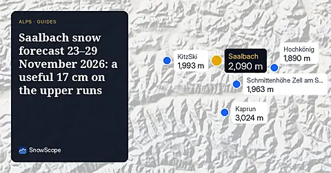
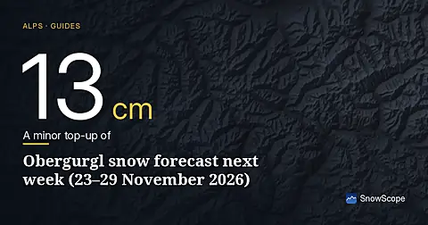

Pila in December: Aosta gondola, flat pass and snow odds
Pila sits right above Aosta, reached by gondola from the city, and December snow here depends on height. Lower slopes near 1533 m can be thin early in the month, while runs near 2723 m average 80 cm. With one 60.00 EUR day pass all season, weekend budgeting is simple.
See the live snow forecast for Pila in the SnowScope appSnow depth, powder alerts and the 3D map, free.
From Aosta to the slopes
As a weekend driver, you can stop in Aosta and ride the gondola straight up to Pila. The mapped ski area has 56 km of mapped runs and 16 mapped lifts, running from 1533 m at the bottom of the lifts to 2723 m at the top for 1190 m of vertical.
Today, on 13 November 2026, snow estimates show an early start: 0 cm at the base (1533 m), 4 cm at mid-mountain (2128 m), and 14 cm at the top (2723 m). Over the next seven days, estimates show 26 cm of new snow at the base, 53 cm at mid-mountain, and 70 cm at the top, while the two-week forecast for mid-mountain and above from 13 to 26 November sits in a range of 52 to 74 cm.

One pass rate all winter
On the official site, an adult 1-day pass costs 60.00 EUR at one flat rate all season, from 28 November 2026 to 11 April 2027. You do not need to chase off-peak calendar dates to avoid higher weekend prices.
For longer stays, an adult 6-day pass for winter 2026-27 costs 322.00 EUR. Having a single day rate makes a December weekend easy to budget before you leave home.
Snow odds by mountain height
In our snow history of 46 past winters (1980-81 to 2025-26), the bottom of the lifts (1533 m) is often thin in December. It averages 34 cm in a usual December (16 cm in a thin 1-in-10 winter, 60 cm in a deep one) and reaches 30 cm or more in 41 %, 52 %, 59 %, and 78 % of past winters across the four December weeks, with 50 cm or more in just 9 %, 15 %, 26 %, and 30 % of past winters.
Mid-mountain (2128 m) averages 45 cm (21 cm thin, 78 cm deep), reaching 30 cm or more in 50 %, 76 %, 85 %, and 89 % of past winters and 50 cm or more in 26 %, 33 %, 41 %, and 59 % of past winters. The top (2723 m) averages 80 cm (37 cm thin, 138 cm deep), hitting 30 cm or more in 87 %, 93 %, 98 %, and 98 % of past winters and 50 cm or more in 57 %, 78 %, 89 %, and 89 % of past winters. For reliable cover, aim for mid-December onwards and ski from mid-mountain to the top.
Pila compared with La Thuile
La Thuile (France / Italy) has a larger mapped ski area with 79 km of mapped runs and 17 mapped lifts between 1468 m and 2608 m, a vertical of 1140 m. In our snow history, its December averages are deeper: 44 cm at the base (1468 m, 17 cm thin, 92 cm deep) and 67 cm at mid-mountain (2038 m, 31 cm thin, 129 cm deep), where 30 cm or more arrives in 78 %, 91 %, 100 %, and 100 % of past winters.
At the top (2608 m), La Thuile averages 98 cm (47 cm thin, 173 cm deep), reaching 50 cm or more in 76 %, 85 %, 93 %, and 98 % of past winters across the four December weeks, alongside 48 %, 67 %, 76 %, and 87 % of past winters for 30 cm or more at its base. La Thuile offers stronger December snow odds, though we did not check pass prices on its official site.
Trends across 46 past winters
Between the first 15 winters (1980-81 to 1994-95) and the last 15 winters (2011-12 to 2025-26), Pila's middle December average edged up from 31 cm to 36 cm at the base, 42 cm to 49 cm at mid-mountain, and 74 cm to 84 cm at the top.
Individual winters still vary sharply. Last winter (2025-26) averaged 27 cm at the base, 39 cm at mid-mountain, and 74 cm at the top, while the thinnest December (2015-16) dropped to 14 cm, 16 cm, and 26 cm against the deepest December (1982-83) at 67 cm, 88 cm, and 158 cm. Usual lasting snow starts around 10 October at the top and 26 October at the base, building toward season peaks of 81 cm, 116 cm, and 214 cm.
Tips for skiers
- Buy your adult 1-day pass for 60.00 EUR or 6-day pass for 322.00 EUR on the official site, since the day rate stays flat from 28 November 2026 to 11 April 2027.
- Aim for 15-21 December or 22-28 December for wider snow cover, when mid-mountain (2128 m) reaches 30 cm or more in 85 % and 89 % of past winters.
- Stick to the upper lifts near 2723 m if you go in the first two weeks of December, where 30 cm or more occurs in 87 % and 93 % of past winters.
- Check the avalanche bulletin before going off-piste, especially after early storms like the 52 to 74 cm two-week forecast for mid-mountain and above.
More maps (external sites)
References and credits
- Pila, official daily ski pass prices 2026-27 pila.it/en/skipass-pila/daily-skipass/
- SnowScope, December snow at three heights and today's snow map snowscope.app/
About these numbers
Snow now and the two-week outlook: SnowScope forecasts (outlook from ECMWF and GFS, a range, not a promise). Lifts and runs: OpenSkiMap mapping. Prices: the official resort pages listed below, read on 2026-11-13; prices can change, check before booking.
Official avalanche bulletins: AINEVA – Associazione Interregionale Neve e Valanghe
Cite this report
For research, teaching or the press: the numbers and charts are free to reuse under CC BY 4.0 with this citation.
SnowScope (2026), Pila in December: Aosta gondola, flat pass and snow odds, https://snowscope.app/blog/en/2026/11/pila-aosta-december-ski-flat-price-snow-2026.html, accessed 2026-11-14
SnowScope (Atlas Labs). (2026, November 14). Pila in December: Aosta gondola, flat pass and snow odds. SnowScope snow reports. https://snowscope.app/blog/en/2026/11/pila-aosta-december-ski-flat-price-snow-2026.html
BibTeX
@misc{snowscope2026pilaaostadecemberskiflat,
author = {{SnowScope (Atlas Labs)}},
title = {Pila in December: Aosta gondola, flat pass and snow odds},
year = {2026},
month = nov,
howpublished = {\url{https://snowscope.app/blog/en/2026/11/pila-aosta-december-ski-flat-price-snow-2026.html}},
note = {Published 2026-11-14 13:29 UTC; accessed 2026-11-14}
}· CC BY 4.0 · Methods, data and tools →
Pila: snow and temperature by height, this winter vs last (tools) →
Follow Pila
Free: a message when fresh snow is coming, and the forecast every morning.
More snow reports

Saas-Fee gets 22 cm on upper slopes next week, with Thursday 26 November the heaviest day. Forecast from 16 November 2026.

Saalbach expects 17 cm mid-range at the top next week (23–29 Nov), with the best day on 29 Nov. Range 3–31 cm shows wide uncertainty.

Obergurgl will get 13 cm at the top next week (23–29 Nov), with the best day on 26 Nov. Light refresh, not a storm.